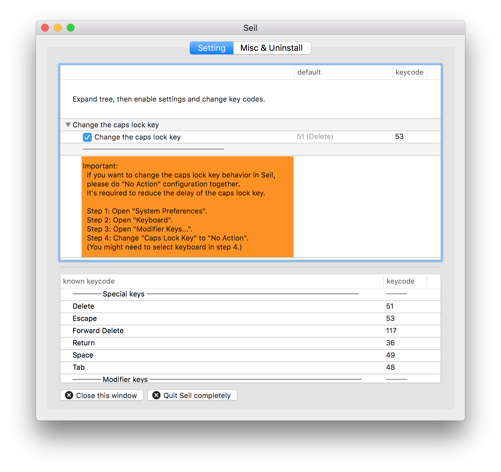

Useful vim keyboard remapping for Mac OSX
Posted on Fri 01 April 2016 in misc
If your a vim user, one of your most frequently used keys is probably Esc, to exit editing mode. One of your least frequently used keys in general is probably the Caps-Lock key, so why not swap Esc and Caps-Lock?
Seil https://pqrs.org/osx/karabiner/seil.html.en allows you to do just that. Once you've remapped the Esc key as shown in the screenshot below, if you haven't already, add:
set -o vi
to your .bashrc and now you can easily edit all your bash commands using the vim keybindings you're accustomed to.
